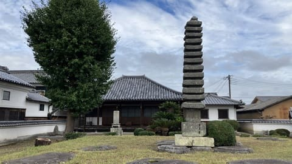
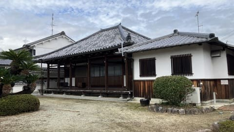
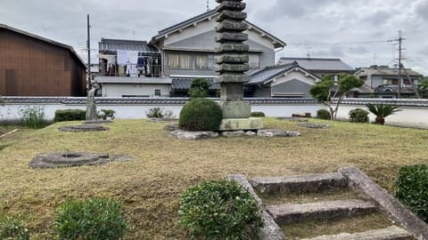

塔跡に建つ十三重石塔
古代の礎石が並ぶ塔の基壇の上には、鎌倉時代に建てられた十三重石塔が残っています。石塔の台座には7世紀の石造露盤が転用されたとされ、飛鳥時代の寺院の面影を伝えています。

奥山久米寺跡は、飛鳥時代の初め頃に造営されたとされる古代寺院跡です。発掘調査により、塔と金堂が一直線に並ぶ伽藍配置であったことがわかっており、古代の寺名は「小治田寺（おはりだでら）」と考えられています。現在は浄土宗の奥山久米寺の境内に塔跡の基壇や礎石が残り、静かな集落の中で飛鳥時代の大寺院の面影を感じられる史跡です。
| 営業時間 | 境内自由 |
|---|---|
| 定休日 | なし |
| 料金 | 無料 |
| 所要時間 | 約10分 |
| 駐車場 | 天極堂テラス駐車場（徒歩約8分・普通車500円） |
| アクセス | 近鉄飛鳥駅から徒歩約53分。 近鉄橿原神宮前駅から徒歩約39分。 奈良交通明日香周遊バス「明日香奥山・飛鳥資料館西」バス停から徒歩約5分。 |
| 地図 | 地図はこちら |

古代の礎石が並ぶ塔の基壇の上には、鎌倉時代に建てられた十三重石塔が残っています。石塔の台座には7世紀の石造露盤が転用されたとされ、飛鳥時代の寺院の面影を伝えています。

井戸跡から「小治田寺」と墨書された土器が出土し、古代の寺名が明らかになりました。金堂の基壇は東西約23.4メートル、南北約19メートルと、飛鳥時代でも第一級の規模を誇ります。
奥山久米寺は、7世紀前半の620～630年代に創建されたと考えられる古代寺院です。かつては橿原市の久米寺の奥の院とも考えられていましたが、1977年に井戸跡から「小治田寺」と墨書された土器が出土し、文献に登場する小治田寺の跡とみられるようになりました。7世紀後半には尼寺の筆頭格とされ、天皇家とも深い関わりがあったと考えられています。寺は10世紀頃に退転したと考えられ、現在は跡地に浄土宗の久米寺が建ち、塔跡や礎石が境内に守られています。